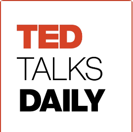

Ted Talks Daily
Ted Talks
Every weekday, TED Talks Daily brings you the latest talks in audio. Join host and
journalist Elise Hu for thought-provoking ideas on every subject imaginable — from
Artificial Intelligence to Zoology, and everything in between
Episodes
Today
The secret to making friends as an adult |
Making friends as an adult can feel like a baffling obstacle course. Why was it so
much easier to connect as kids? To help you find well-rounded and fulfilling
friendships, psychologist Marisa Franco discusses science-backed tips on how to make
(and keep) friends, like the optimism-inducing "acceptance prophecy" and th
33 min 15 sec
Today
The secret to making friends as an adult |
Making friends as an adult can feel like a baffling obstacle course. Why was it so
much easier to connect as kids? To help you find well-rounded and fulfilling
friendships, psychologist Marisa Franco discusses science-backed tips on how to make
(and keep) friends, like the optimism-inducing "acceptance prophecy" and th
33 min 15 sec